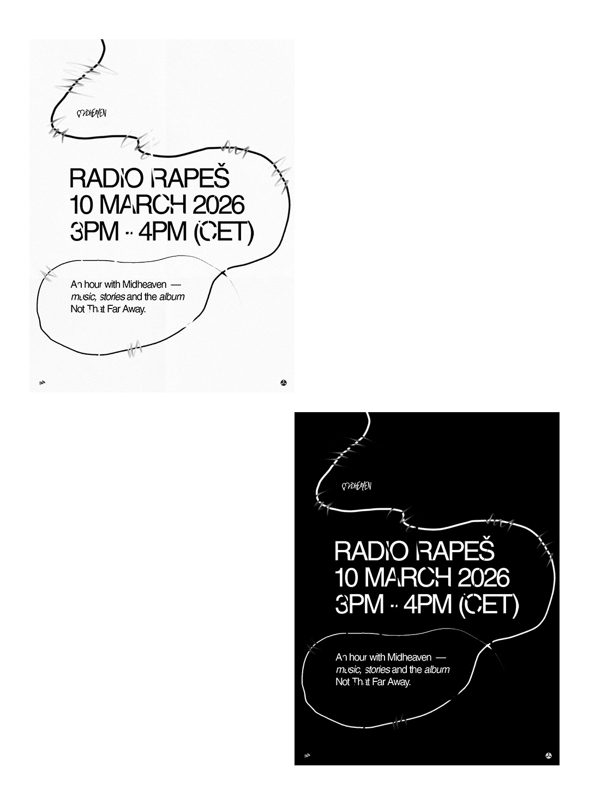
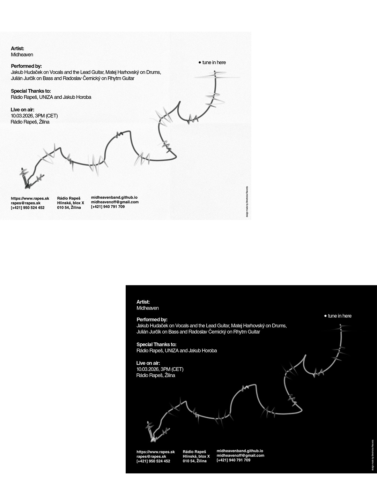

Midheaven played live on Rádio Rapeš on 10 March 2026 from 3PM to 4PM (CET), presenting and discussing the band’s album Not That Far Away. The one-hour broadcast focused on the ideas behind the record, the circumstances in which it was written, and the atmosphere that shaped the songs.
Written during a four-month stay abroad in Austria, Not That Far Away explores themes of distance, longing, and the quiet comfort that sometimes comes from missing someone. The album grew out of a period marked by solitary evenings, long working days, and the experience of feeling emotionally connected to someone while being separated by hundreds of kilometers.
Much of the record was shaped by this sense of living between places. While physically present in unfamiliar surroundings, thoughts often returned to home, memories, and the people who remained far away. These experiences gradually formed the emotional foundation of the album.
The songs move through reflections on love, absence, and memory, often framed by travel, unfamiliar cities, and late-night moments of introspection. Rather than searching for clear answers, the album allows uncertainty to remain present, mirroring the way certain feelings tend to return when something meaningful is left unresolved.
Several of the tracks revisit similar emotions from different angles. This repetition reflects the natural cycle of thought and memory, where certain moments and people continue to surface long after they have passed. In this way, the album builds its narrative gradually rather than presenting a single, direct conclusion.
Musically, Not That Far Away leans toward intimacy and atmosphere. Acoustic foundations, subtle textures, and slow-building arrangements create space for reflection, while occasional moments of intensity emerge as emotional peaks within the record. The overall sound remains restrained, allowing the atmosphere of the songs to unfold naturally.
RADIO RAPEŠ
DATE: 10 MARCH 2026
TIME: 3PM - 4PM (CET)
During the Rádio Rapeš broadcast, Midheaven spoke about the creative process behind the album, the experiences that influenced its themes, and the journey of turning personal moments into music. The program also included several songs from Not That Far Away, giving listeners insight into the sound and character of the record.
The entire show was recorded and will be uploaded later so listeners who were unable to tune in live will still be able to hear the conversation and the music. The recording will allow the broadcast to remain available beyond the live airing and offer another opportunity to explore the story behind Not That Far Away.
https://www.rapes.sk
rapes@rapes.sk
[+421] 950 524 452
Rádio Rapeš
Hlinská, blox X
010 54, Žilina
